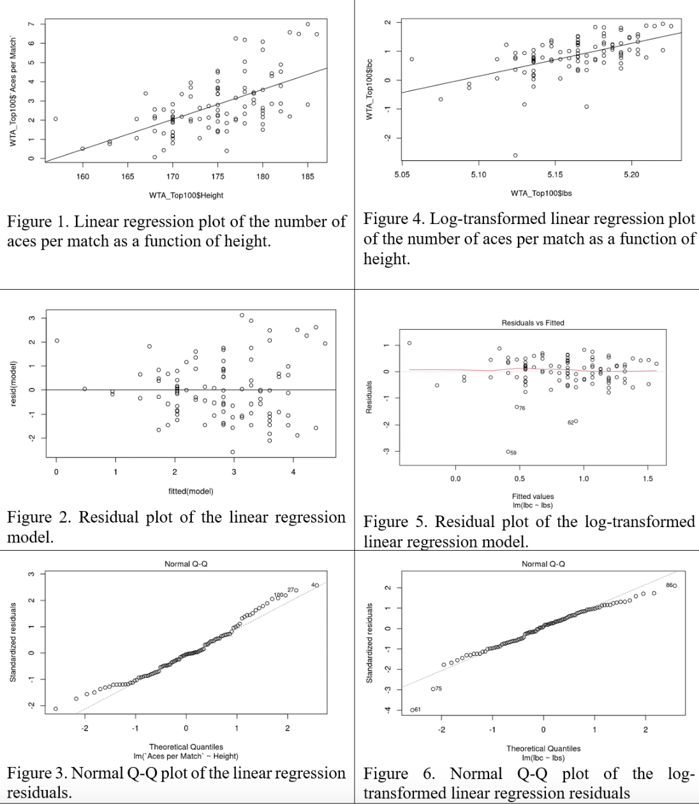

Advantage, Height: Do Taller Female Professional Tennis Players Serve Better?
An examination of the relationship between height and the number of aces per match for female professional tennis players in the Women’s Tennis Association 2022 year-end Top 100.
Introduction
It is common knowledge that height provides an advantage in certain sports, most notably basketball. When it comes to professional tennis however, height is less commonly associated with success. Should height be considered an important factor in tennis-playing ability? Here we will seek to determine if a height advantage exists in professional women’s tennis, specifically in terms of the serve. This is arguably the most important shot in the sport as it initiates each point. It seems logical for a taller player to serve faster as she would be able to strike the ball down from a greater height than a shorter player, resulting in more power. Cernosek and Vaverka (2016) attribute height to a ‘biomechanical advantage that helps [players] obtain a higher serve speed: taller players with longer limbs will achieve a higher peripheral racket speed at the moment of hitting the ball than shorter players with the same angular velocity of upper extremity segments’ (Cernosek and Vaverka 2016). Additionally, Bonato et al. (2015) found height to be ‘the main anthropometric determinant of serve speed in professional tennis players’ (Bonato et al. 2015). However, this study only looked at 8 professional players, all of which were male. Cernosek and Vaverka’s (2016) analysis was more substantial as it looked at both male and female tennis players who competed at all four Grand Slam tournaments between 2008 and 2012. Their analysis found statistically significant positive correlations between body height and first serve speed (Cernosek and Vaverka 2016). Similarly, Gallagher et al.’s (2021) analysis of more recent data from the 2013 to 2019 Grand Slam tournaments found ‘a strong positive correlation between the median percent of aces per match and height’ for both male and female players (Gallagher, Frisoli, and Luby 2021). An ace is a serve that is not returned by the opponent. Thus, an ace count indicates the number of points a player wins using only their serve. With an increased likelihood of serving faster, taller players may hit more aces as a fast serve ‘puts the opponent under stress and may hinder its return’ (Martin 2018). However, Martin (2018) further states that serve speed is not the only factor in determining ace count as spin and placement are also important (Martin 2018). As explained by Cernosek and Vaverka (2016), taller players ‘will achieve higher hand-racket angular momentum’ which may give them an advantage in terms of spin and placement (Cernosek and Vaverka 2016).
This analysis will contribute to the discussion on the effect of height on the professional tennis serve by providing insight on some of the most recent data available: we will examine the female players comprising the Women’s Tennis Association (WTA) top 100 rankings as of December 7th, 2022 (WTA.com 2022). Moreover, unlike previous studies, this analysis will not be limited to the Grand Slam tournaments and will instead take into account all tournaments in 2022 that contributed to professional ranking points. We will try to determine if a relationship exists between player height and the number of aces hit per match. Taking the aforementioned biomechanical factors into account, we will attempt to see if taller female professional players are better servers and perhaps better tennis players, the ability to win service games being crucial to winning matches.
Methods
The sample used in this analysis consists of the players ranked in the WTA top 100 rankings as of December 7th, 2022. The two variables we are interested in are player height (in cm) and the number of aces hit per match. Data regarding height, number of aces and number of matches played in 2022 was obtained from the ‘Stats’ section on the WTA website. The matches included in these statistics consist of all of the professional matches played on the WTA circuit in the 2022 calendar year in addition to those played at the Grand Slam tournaments, managed by the International Tennis Federation. As the WTA does not provide an aces per match statistic, this had to be calculated separately in Excel instead. It was decided to observe aces hit per match rather than the total number of aces hit in the year as the former provides a better indication of a player’s serving ability. This is because there is great variability between the numbers of matches played by each player in a season due to factors such as injury, illness, ranking, finances, sponsorships, nationality or pregnancy. It is logical to assume that a player who has played more matches in the year will have a higher total ace count, and consequently an aces per match statistic is more representative.
As the data being considered is a rankings list, it was not randomly sampled. It was decided to observe the top 100 players because this threshold typically represents the most elite performers in the sport. Consequently, lack of playing experience or differing skill level are likely to play a smaller part in the results observed, allowing us to focus more on the effect of height. The results of this analysis will therefore apply to professionals rather than amateurs. Additionally, observing 100 players allows for a balance between the time-consuming nature of manual data input into Excel and the maximization of sample size. Data for two players, ranked 72 and 92, could not be used as the WTA database did not include these players’ heights. Their heights could not be found on other online databases. In order to keep a sample size of 100, data from the players ranked 101 and 102 was used instead.
Data Analysis
As the two variables in question are numeric, any potential relationship between them can be identified using a regression. An initial least-squares regression of the form y = β0 + β1x was carried out, with intercept β0 and slope β1. In a situation where no relationship exists between height and the number of aces per match, the best-fitting line is expected to be flat. Therefore, H0 : β1 = 0 and HA : β1 ≠ 0. The least-squares regression yielded a line with β1 = 0.15611 (Figure 1), and the t-statistic for this slope value was 7.105 with a p-value of 0.0000000001953. While this very low p-value seems to indicate that there exists a relationship between height and the number of aces per match, the suitability of this linear fit must be checked before any conclusions can be drawn.
The residual plot shown in Figure 2 allows us to assess the suitability of the linear model. The three underlying assumptions for using a linear regression are that the residuals display linearity, homoskedasticity and normality. The linearity assumption seems fulfilled here as there appears to be a roughly even number of points scattered either side of the residual = 0 line. However, the residuals show heteroskedasticity as variability increases with height, notably from approximately 170 cm onwards (Figure 2). Log-transforming both variables in the linear model (Figure 4) yields a more appropriate fit which is more successful at fulfilling not only the linearity assumption but also the homoskedasticity and normality assumptions. The residual plot in Figure 5 shows points scattered either side of the residual = 0 line with much more constant variance than the one resulting from the linear model (Figure 2). The Normal Q-Q plot in Figure 6 shows that the residuals resulting from the log-transformed linear model are closer to normality than those resulting from the linear model (Figure 3). It is not a concern that these log-transformed residuals do not show perfect normality as the sample size of 100 is large, meaning that the central limit theorem is in place. The log-transformed fit is therefore a more appropriate model for the data as it satisfies these three assumptions much more suitably than the linear model.
This log-transformed regression takes the form log(y) = β0 + β1log(x), while the hypotheses remain H0 : β1 = 0 and HA : β1 ≠ 0. The regression yields a β1 value of 11.366, with a t-statistic of 6.479 and p-value of 0.00000000371. We once again observe an extremely low p-value, much lower than α = 0.05. This p-value indicates that it is virtually impossible to have observed such structured data in a world where no relationship exists between the two variables. Therefore, we can reject H0 : β1 = 0. Back-transforming the x and y variables of this log-transformed model informs us that the number of aces per match will increase on average by 0.16 for each 1 cm increase in height. With a multiple R-squared value of 0.2999, we can infer that there exists a moderate positive correlation between player height and the number of aces per match. This value indicates that just under a third of the variation in the number of aces per match can be explained by height. The residual standard error of 0.5626 refers to the variability in the number of aces per match that can be explained by factors other than height. Three outliers (observations 59, 62 and 76, Figure 4) exemplify the influence of these other factors as these players have aces per match counts contradictory to what would be expected for their heights.

Conclusion
Overall, a moderate positive correlation was found between a professional tennis player’s height and her number of aces hit per match. While not perfect by any means, a log-transformed linear regression model was deemed a suitable approximation for the data, predicting a mean increase of about 0.16 aces per match for each 1 cm increase in height. This model also suggests that just under a third of the variability in the number of aces per match can be explained by height in female professional tennis. The rest of the variability can be explained by factors including technique, strength, strategy, court surface (fast versus slow court) and weather conditions. These other factors can be used to provide explanations for the three outliers observed in the data: three taller players underperformed according to the log-transformed model, hitting fewer aces per match than expected. These players may have played a higher proportion of their matches on clay courts, where the conditions are slower and therefore less conducive to aces. Alternatively, they may have used less effective technique or strategy than other players. It is possible that using a larger sample size would have resulted in a stronger correlation between height and aces per match. This analysis only considers the top 100 female players in the world. If instead the WTA’s top 1000 players were considered, a clearer pattern between the two variables may emerge.
While the data supports the suggestion that a taller professional female tennis player is likely to hit more aces per match than her shorter colleagues, it must be noted that this does not necessarily make her a better server. While ace counts give us a good indication of a player’s serving ability, they are not the best metric. Many times, a good serve can force the opponent to miss her return while still hitting the ball with the racket. This means that these serves, while effective, are not classified as aces as the returner’s racket touched the ball. Additionally, this analysis did not consider double faults or first serve percentages. A player may serve in a risky way that results in a high ace count counterbalanced by a high double-fault count or a lower first serve percentage. This would result in an overall serving ability that is not reflected in a simple aces per match count. A statistic such as a player’s percentage of service games won would be a more suitable reflection of her serving ability. Carrying out a similar analysis looking at this statistic instead of the number of aces per match would consequently be more representative of serving and overall tennis ability.